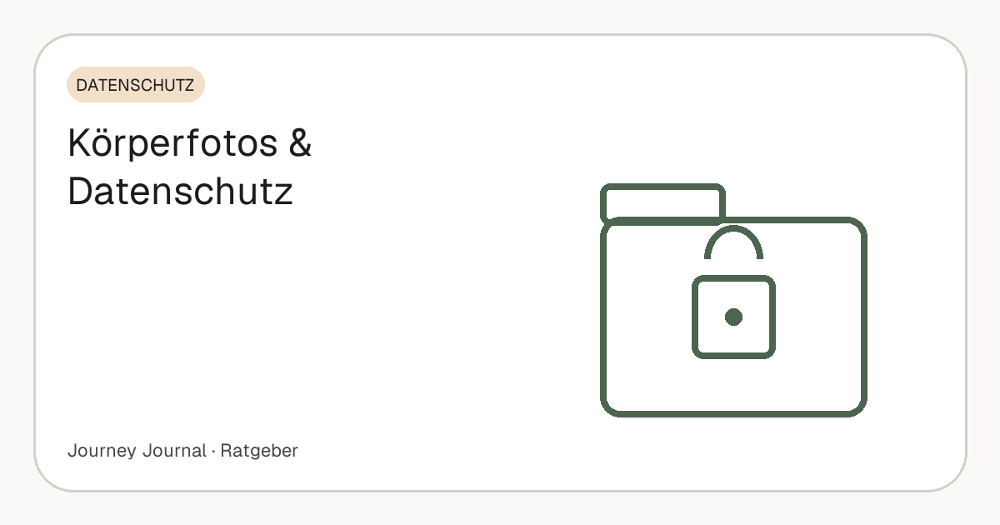

Ratgeber · Datenschutz · 6 Min. Lesezeit
Körperfotos und Datenschutz: Wem gehören deine Progress-Bilder eigentlich?
Progress-Fotos sind die intimsten Bilder, die die meisten Menschen von sich machen: wenig Kleidung, ehrliche Perspektive, schlechte Tage inklusive. Umso erstaunlicher, wie selten gefragt wird, wo diese Bilder eigentlich landen. Dieser Artikel erklärt, was mit Körperfotos in typischen Apps passiert, welchen Schutz die DSGVO vorsieht, welche fünf Fragen du vor dem ersten Foto klären solltest – und warum der eigene Speicher die bessere Wahl ist.

Teil unseres Guides: Progress-Fotos: Der komplette Guide – Aufnahme, Rhythmus, Vergleich, Speicherung
Kurz gesagt
- Körperfotos im Abnehmkontext können Gesundheitsdaten sein – und die stehen in der DSGVO unter besonderem Schutz (Art. 9).
- Das übliche Modell ist die Anbieter-Cloud: bequem, aber ein fremdes Unternehmen besitzt eine Datenbank mit deinen Bildern.
- Fünf Fragen vor dem ersten Foto: Wo gespeichert? Wer hat Zugriff? Was passiert beim Löschen? Bekomme ich alles heraus? Sind die Bilder in der Galerie sichtbar?
- Die Alternative ist dein eigener Speicher – Google Drive, iCloud, Festplatte – mit einer App, die dort nur ihren eigenen Ordner sieht.
- Das Galerie-Problem ist Alltag, nicht Theorie: Progress-Fotos gehören nicht zwischen Urlaubsbilder.
Was Körperfotos rechtlich sind
Die DSGVO kennt eine Kategorie besonders geschützter Daten, darunter Gesundheitsdaten (Art. 9). Ob ein einzelnes Foto darunterfällt, hängt vom Kontext ab – ein Bild aus einer Abnehm-App, verknüpft mit Gewicht, Datum und Verlauf, lässt Rückschlüsse auf den Gesundheitszustand zu und ist damit deutlich näher an dieser Kategorie als ein Urlaubsfoto. Für dich heißt das: Diese Daten verdienen die höchste Schutzstufe, die du vergeben kannst, und ein Anbieter, der sie verarbeitet, braucht dafür eine ausdrückliche Grundlage.
Dazu kommt das Recht auf Datenübertragbarkeit (Art. 20 DSGVO): Du hast Anspruch darauf, deine Daten in einem gängigen, maschinenlesbaren Format zu bekommen. In der Praxis scheitert das oft daran, dass der Export in der App schlicht nicht vorgesehen ist oder nur ein Teil der Daten herauskommt – ohne Datum, ohne Reihenfolge. Rechtlich hast du den Anspruch; praktisch entscheidet die Architektur der App, ob er sich einlösen lässt.
Das übliche Modell: die App-Cloud
Die meisten Progress-Apps laden Fotos auf die Server des Anbieters. Das ist bequem – Synchronisation, Vergleiche, Backup laufen automatisch – und bedeutet zugleich: Ein Unternehmen, das du nicht kennst, besitzt eine Datenbank mit Körperfotos. Wird es verkauft, gehackt oder eingestellt, sind deine Bilder betroffen. Keines dieser drei Szenarien ist exotisch; Start-ups werden regelmäßig übernommen oder abgeschaltet, und Datenpannen treffen auch große Anbieter.
Was mit den Bildern dort passiert, steht in der Datenschutzerklärung – oder eben nicht. Typische Punkte, die man suchen muss: Werden Fotos für die Verbesserung von Modellen oder Funktionen ausgewertet? Wer sind die Auftragsverarbeiter, und in welchem Land stehen die Server? Gibt es eine Löschfrist nach Kontoschließung, und gilt sie auch für Backups?
Fünf Fragen, die du jeder App stellen solltest
1. Wo werden die Fotos gespeichert? Auf dem Gerät, in deinem eigenen Cloud-Konto oder auf den Servern des Anbieters? Nur im dritten Fall gibst du die Kontrolle ab – und das sollte bewusst passieren, nicht nebenbei.
2. Wer kann die Fotos sehen? Ende-zu-Ende-Verschlüsselung bedeutet, dass auch der Anbieter nicht hineinschauen kann. „Verschlüsselte Übertragung“ bedeutet nur, dass der Weg geschützt ist – auf dem Server liegt das Bild lesbar.
3. Was passiert beim Löschen? Verschwindet das Bild sofort, nach 30 Tagen, oder bleibt es in Backups? Und: Löscht die Kontolöschung wirklich alles?
4. Bekomme ich alles heraus? Ein Export mit Originaldateien, Datum und Reihenfolge – oder nur Screenshots aus der App? Ohne Export sind Jahre an Dokumentation an einen Anbieter gebunden.
5. Sind die Bilder in der Galerie sichtbar? Viele Apps speichern zusätzlich in die normale Fotogalerie des Handys. Das ist der Punkt, der im Alltag am häufigsten unangenehm wird.
Wenn die Antworten in der Datenschutzerklärung nicht zu finden sind oder nur in Juristendeutsch stehen, ist das die Antwort.
Die Alternative: dein eigener Speicher
Ein Ordner in deinem eigenen Google Drive, in iCloud oder auf der Festplatte gehört dir. Kein Anbieter kann ihn verkaufen, kein Start-up kann ihn beim Aus mitnehmen, und der Export ist trivial, weil die Dateien ohnehin schon bei dir liegen. Der Nachteil: Du musst die Struktur selbst pflegen – Ordner nach Typ und Monat, Dateinamen mit Datum – oder eine App nutzen, die das für dich in deinem Speicher tut, ohne die Bilder selbst zu behalten.
Technisch ist das sauber lösbar. Google Drive etwa bietet Apps einen eingeschränkten Zugriffsmodus (den Scope „drive.file“), bei dem die App ausschließlich die Dateien sieht und bearbeiten kann, die sie selbst angelegt hat – nicht den Rest deines Drives. Eine App, die diesen Modus nutzt, kann deine Steuererklärung im selben Drive gar nicht lesen. Beim Verbinden einer App lohnt sich deshalb ein Blick auf den Berechtigungsdialog: Steht dort „alle Dateien in Google Drive anzeigen und verwalten“, fragt die App mehr, als sie braucht.
Das Galerie-Problem
Ein unterschätzter Punkt: Fotos in der normalen Handy-Galerie tauchen auf, wenn du jemandem Urlaubsbilder zeigst, wenn das Handy auf dem Tisch liegt und die Galerie offen ist, wenn automatische Cloud-Backups „Erinnerungen“ daraus bauen. Ein getrennter, nicht in der Galerie sichtbarer Speicherort ist kein Luxus, sondern Alltagsschutz – und einer der Hauptgründe, warum viele Menschen Progress-Fotos irgendwann nicht mehr machen.
Auf Android und iOS können Apps Bilder in einem privaten App-Speicher ablegen, den die Galerie nicht indexiert. Ob eine App das tut, siehst du am einfachsten, indem du nach dem ersten Foto die Galerie öffnest: Ist das Bild dort, landet es bei jedem Foto dort.
Warum das für die Motivation zählt
Datenschutz klingt nach Pflicht, ist aber Voraussetzung dafür, dass die Dokumentation überhaupt stattfindet. Die Übersichtsarbeit von Burke und Kollegen (2011) zeigt, dass regelmäßige Selbstbeobachtung mit größerem Gewichtsverlust verbunden ist – und regelmäßig wird sie nur, wenn sie sich sicher anfühlt. Wer jedes Mal überlegt, ob das Bild später irgendwo auftaucht, macht es irgendwann nicht mehr. Ein geklärter Speicherort nimmt diese Frage ein für alle Mal vom Tisch.
Checkliste vor dem ersten Foto
Speicherort geklärt · nicht in der Galerie · Backup vorhanden · Export jederzeit möglich · Löschen jederzeit möglich · Datenschutzerklärung gelesen. Sechs Punkte, fünf Minuten – und ein Jahr Ruhe. Die vollständige Vorbereitung für den Start – Fotos, Maße, Gewicht, Video – steht in der Checkliste für Tag 1.
Häufige Fragen
Sind Progress-Fotos Gesundheitsdaten?
Körperfotos im Kontext von Gewichtsverlust, verknüpft mit Gewicht und Verlauf, können als besonders schützenswerte Daten im Sinne von Art. 9 DSGVO gelten. Umso wichtiger, dass du kontrollierst, wo sie liegen.
Ist Google Drive sicher für Körperfotos?
Es ist dein Konto mit deiner Zwei-Faktor-Authentifizierung – deutlich mehr Kontrolle als ein App-Server, den du nicht kennst. Wichtig ist, dass die App nur auf ihren eigenen Ordner zugreifen kann (Scope drive.file).
Habe ich ein Recht, meine Fotos aus einer App zu bekommen?
Ja, die DSGVO gibt dir ein Recht auf Datenübertragbarkeit (Art. 20). Praktisch hängt es davon ab, ob die App einen vollständigen Export anbietet – das solltest du vor dem ersten Foto prüfen.
Wie verhindere ich, dass Progress-Fotos in der Galerie landen?
Nutze eine App, die in ihrem privaten App-Speicher und in deinem eigenen Cloud-Ordner speichert, nicht in der Fotogalerie. Prüfen: nach dem ersten Foto die Galerie öffnen.
Was passiert mit meinen Fotos, wenn eine App eingestellt wird?
Liegen sie auf dem Server des Anbieters, hängt es von dessen Abwicklung ab – oft bleibt wenig Zeit für einen Export. Liegen sie in deinem eigenen Speicher, ändert sich für dich nichts.
Quellen
- Art. 9 DSGVO – Verarbeitung besonderer Kategorien personenbezogener Daten – Gesundheitsdaten sind besonders geschützt
- Art. 20 DSGVO – Recht auf Datenübertragbarkeit – Anspruch auf Herausgabe der eigenen Daten in einem gängigen Format
- Google Workspace Developers: Choose Google Drive API scopes – Der Scope drive.file beschränkt eine App auf die von ihr selbst erstellten Dateien
- Burke L. E., Wang J., Sevick M. A. (2011): Self-monitoring in weight loss: a systematic review. J Am Diet Assoc 111(1) – Selbstbeobachtung ist mit größerem Gewichtsverlust verbunden
Dieser Artikel ersetzt keine ärztliche Beratung. Bei einer größeren Gewichtsreduktion ist eine medizinische Begleitung sinnvoll.